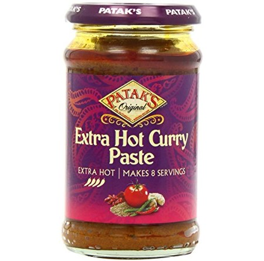

Curry

Aaah, the magic of indian curry!
I love Indian food. So spicy and rich. There are many dishes that you can prepare at home, but I really love how simple you can make good curry with Patak's Extra Hot Curry Paste.
This curry paste is really rich in flavor compared to others. Finding the right amount of spiciness for your palate might take some experimenting. My suggestion is to start with a smaller amount and remember to take notes for the next time.
In this recipe I'll present an example of a curry dish using this curry paste. I've put extra vegetables as optional, that way if you have the other ingredients in your house you'll always be able to make this.
Ingredients
- 400 gr chicken
- 1/2 onion
- vegetables by choice
- 200 gr coconut milk
- 400 gr canned tomatoes
- spices
- 1 tbsp Patak's Extra Hot Curry Paste
- rice
Steps
- Fry the onion on low heat for a couple of minutes in a frying pan, than add chicken and raise the temperature to medium
- Add the selected vegetables and keep frying for 5 minutes. At this point I like to add spices like a little salt, dry garlic and pepper. Don't overdo it though, as we'll be adding curry too.
- Add the curry paste and keep stirring so that everything mixes well.
- Add cocunt milk and canned tomatoes and heat up until boiling temperature. Lower the heat and put a lid on the frying pan. If you don't have a tall enough pan, use a kettle for heating up tomatoes and coconut oil and add the previous fried ingredients to the kettle.
- Let simmer on low heat while you prepare the rice. Extended time in the kettle will just make the flavors richer.